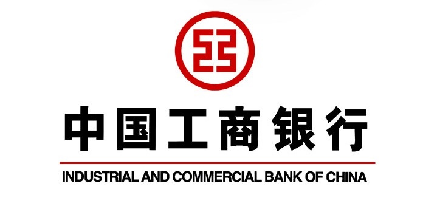

这半年你帐户里面的资金流量越大有两种办法增加星级，你的星级就给你评定调整的越高总结，同样道理，半年你帐户里面的资金流量越大，你的星级就给你评定调整的越高，
尽量多的往里面存钱，工行每半年会自动评定调整次星级，纸白银什么的，象纸黄金，多投资工行的理财产品，就是资金流量越大，只要进进出出帐户的资金流量大就行我用4万块钱在工行炒了几个月纸白银，给你评定的星级也越高。不需要你有很多钱在里面。
存款量大了 就可以了 要20万存款成为五星级客户多存钱啊。
1 星级介绍
工商银行客户等级分为：准星级、3星级、4星级、5星级、6星级、7星级。
首先星级是按星点值计算的:
7星级客户：星点值在80000（含）以上
6星级客户：星点值10000（含）～80000
5星级客户：星点值2000（含）～10000
4星级客户：星点值500（含）～2000
3星级客户：星点值50（含）～500
准星级客户：星点值0（不含）～50
2 直达条件
1、 签订私人银行服务协议，调整服务星级为七星。
2、 开立工银财富理财金账户卡、白金信用卡，调整服务星级为六星。
3、 开立理财金账户、信用卡金卡，调整服务星级为五星。
4、 开立信用卡普卡，调整服务星级为四星。
3 星级计算方法
3.1 个人资产
贡献星级里面的星点值是可以通过以下方式进行升级的：
（1）短期资产
主要包括：活期储蓄存款、第三方存管、灵通快线理财产品、货币市场基金、信用卡存款。每万元短期资产可获得135星点值。
（2）中长期资产
主要包括：定期储蓄存款（含定活两便）、公积金存款、理财产品（不含灵通快线）、基金（不含货币市场基金）、国债、保险、黄金（含纸黄金、实物黄金、品牌金）等。每万元中长期资产可获得100星点值。
3.2 个人负债
个人负债指标由个人住房按揭贷款、其他个人贷款、卡透支三个细项组成，指标计算口径为各项个人负债的半年日均余额。
（1）每万元个人住房按揭贷款可获得100星点值。
（2）其他个人贷款指标包括个人消费贷款、个人经营性贷款等品种，每万元其他个人贷款可获得200星点值。
（3）每万元信用卡计息透支可获得200星点值。
3.3 中间业务
中间业务指标由投资理财类交易、卡消费交易、结算类交易三个细项组成，指标计算口径为半年累计交易金额。若单次交易金额超过该项业务手续费收取标准上限金额，则以上限金额作为该次交易金额计入指标统计。若单次交易已享受我行费率优惠，则交易金额按优惠比例折算后再计入指标统计。
（1）投资理财类
交易指标主要包括：基金购买与赎回（不含货币基金）、理财产品购买（不含灵通快线）、国债购买、保险购买、黄金买卖、外汇买卖等。每万元投资理财交易额可获得200星点值。
（2）卡消费
交易指标主要包括灵通卡、理财金账户卡（含工银财富理财金账户卡）、信用卡、贷记卡、准贷记卡等各卡种通过POS刷卡消费产生的交易。每万元投资理财交易额可获得400星点值。（可能下调为200）
（3）结算类
交易指主要包括异地存取款、异地汇款、跨行汇款、速汇款等。每万元结算类交易额可获得200星点值。
工行新版星点值计算累计规则 (2015)
持有以下资产每万元（指6个月日均余额）可计星点值如下：
1. 活期存款、灵通快线类/e灵通理财产品、货币基金、第三方存管、账户原油、账户外汇计135星点值；
2. 定期存款、公积金存款、非灵通快线类理财产品、非货币基金、国债、保险现金价值、账户金/银/钯/铂、实物黄金、品牌金计100星点值。
以下负债每万元（指6个月日均余额）可计星点值如下：
1. 个人住房按揭贷款计150星点值；个人消费贷款、个人经营性贷款、卡类非免息期透支额计200星点值。
以下投资交易每万元（指近6个月累计交易额）可计星点值如下：
1. 非货币基金买卖、电子渠道非灵通快线类理财产品购买、保险购买、凭证式国债购买计200星点值；
2. 记账式国债购买计50星点值。
3. 账户金/银/铂/钯、实物金、贵金属递延交易、柜台购买非灵通快线类理财产品计100星点值。
4. 外汇买卖和结售汇交易每万元（指交易级差）按中间价与交易价格价差2倍计星点值。
5. Pos刷卡消费每万元（指累计金额）计200星点值（各类借记卡、信用卡）。
6. 异地存取款、异地汇款、跨行汇款按实收手续费2倍计星点值，如果通过柜台办理按实收手续费1倍计星点值。
7. 代发工资每万元（指近6个月代发额）计50星点值。
温馨提示：金额不足万元时，根据实际金额按比例计算星点值。